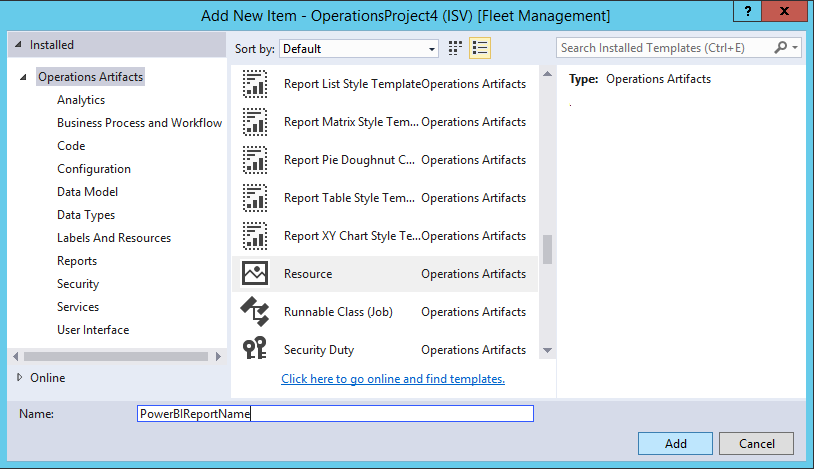

Add analytics to workspaces by using Power BI Embedded
Note
This feature is supported in Finance and Operations (version 7.2 and later).
Introduction
This topic shows how to embed a Microsoft Power BI report on the Analytics tab of a workspace. For the example that is given here, we will extend the Reservation management workspace in the Fleet Management application to embed an analytical workspace on an Analytics tab.
Prerequisites
- Access to a developer environment that runs Platform update 8 or later.
- An analytical report (.pbix file) that was created by using Microsoft Power BI Desktop, and that has a data model that is sourced from the Entity store database.
Overview
Whether you extend an existing application workspace or introduce a new workspace of your own, you can use embedded analytical views to deliver insightful and interactive views of your business data. The process for adding an analytical workspace tab has four steps.
- Add a .pbix file as a Dynamics 365 resource.
- Define an analytical workspace tab.
- Embed the .pbix resource on the workspace tab.
- Optional: Add extensions to customize the view.
Note
For more information about how to create analytical reports, see Getting started with Power BI Desktop. This page is a great source for insights that can help you create compelling analytical reporting solutions.
Add a .pbix file as a resource
Before you begin, you must create or obtain the Power BI report that you will embed in the workspace. For more information about how to create analytical reports, see Getting started with Power BI Desktop.
Follow these steps to add a .pbix file as a Visual Studio project artifact.
Create a new project in the appropriate model.
In Solution Explorer, select the project, right-click, and then select Add > New Item.
In the Add New Item dialog box, under Operations Artifacts, select the Resource template.
Enter a name that will be used to reference the report in X++ metadata, and then click Add.

Find the .pbix file that contains the definition of the analytical report, and then click Open.
Now that you've added the .pbix file as a Dynamics 365 resource, you can embed the reports in workspaces and add direct links by using menu items.
Add a tab control to an application workspace
In this example, we will extend the Reservation management workspace in the Fleet Management model by adding the Analytics tab to the definition of the FMClerkWorkspace form.
The following illustration shows what the FMClerkWorkspace form looks like in the designer in Microsoft Visual Studio.
Follow these steps to extend the form definition for the Reservation management workspace.
- Open the form designer to extend the design definition.
- In the design definition, select the top element that is labeled Design | Pattern: Workspace Operational.
- Right-click, and then select New > Tab to add a new control that is named FormTabControl1.
- In the form designer, select FormTabControl1.
- Right-click, and then select New Tab Page to add a new tab page.
- Rename the tab page to something meaningful, such as Workspace.
- In the form designer, select FormTabControl1.
- Right-click, and then select New Tab Page.
- Rename the tab page to something meaningful, such as Analytics.
- In the form designer, select Analytics (Tab Page).
- Set the Caption property to Analytics, and set the Auto Declaration property to Yes.
- Right-click the control, and then select New > Group to add a new form group control.
- Rename the form group to something meaningful, such as powerBIReportGroup.
- In the form designer, select PanoramaBody (Tab), and then drag the control onto the Workspace tab.
- In the design definition, select the top element that is labeled Design | Pattern: Workspace Operational.
- Right-click, and then select Remove pattern.
- Right-click again, and then select Add pattern > Workspace Tabbed.
- Perform a build to verify your changes.
The following illustration shows what the design looks like after these changes are applied.

Now that you've added the form controls that will be used to embed the workspace report, you must define the size of the parent control so that it accommodates the layout. By default, both the Filters Pane page and the Tab page will be visible on the report. However, you can change the visibility of these controls as appropriate for the target consumer of the report.
Note
For embedded workspaces, we recommend that you use extensions to hide both the Filters Pane and Tab pages, for consistency.
You've now completed the task of extending the application form definition. For more information about how to use extensions to do customizations, see Customize through extension and overlayering (This is an external linThis link was changed due to HTMLfromRepoGenerator).
Add X++ business logic to embed a viewer control
Follow these steps to add business logic that initializes the report viewer control that is embedded in the Reservation management workspace.
Open the FMClerkWorkspace form designer to extend the design definition.
Press F7 to access the code behind the code definition.
Add the following X++ code.
[Form] public class FMClerkWorkspace extends FormRun { private boolean initReportControl = true; protected void initAnalyticalReport() { if (!initReportControl) { return; } // Note: secure entry point into the Workspace's Analytics report if (Global::hasMenuItemAccess(menuItemDisplayStr(FMClerkWorkspace), MenuItemType::Display)) { // initialize the PBI report control using shared helper PBIReportHelper::initializeReportControl('FMPBIWorkspaces', powerBIReportGroup); } initReportControl = false; } /// <summary> /// Initializes the form. /// </summary> public void init() { super(); this.initAnalyticalReport(); } }Perform a build to verify your changes.
You've now completed the task of adding business logic to initialize the embedded report viewer control. The following illustration shows what the workspace looks like after these changes are applied.
Note
You can access the existing operational view by using the workspace tabs below the page title.
Reference
PBIReportHelper.initializeReportControl method
This section provides information about the helper class that is used to embed a Power BI report (.pbix resource) in a form group control.
Syntax
public static void initializeReportControl(
str _resourceName,
FormGroupControl _formGroupControl,
str _defaultPageName = '',
boolean _showFilterPane = false,
boolean _showNavPane = false,
List _defaultFilters = new List(Types::Class))
Parameters
| Name | Description |
|---|---|
| resourceName | The name of the .pbix resource. |
| formGroupControl | The form group control to apply the Power BI report control to. |
| defaultPageName | The default page name. |
| showFilterPane | A Boolean value that indicates whether the filter pane should be shown (true) or hidden (false). |
| showNavPane | A Boolean value that indicates whether the navigation pane should be shown (true) or hidden (false). |
| defaultFilters | The default filters for the Power BI report. |